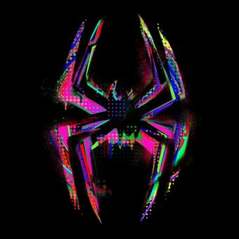

"“Calling”", un message profond
Publié le : 18/10/2023
Temps de lecture : 3 min
La chanson “Calling” de la bande originale du film est une chanson qui aborde des thèmes importants du film : le sacrifice et le dévouement.
La chanson est chantée par 4 rappeurs américains : A boogie wit da hoodie, Metro Boomin, Swae Lee et Nav. Ces artistes ont fait de nombreux feat pour composer la bande originale du film. Metro Boomin était en effet l'artiste principal en charge de la bande son du film et a effectué de nombreux feats avec d'autres rappeurs. Calling est une musique très marquante dans le film car elle est sincère et exprime bien les sentiments du personnage de Miles par rapport à celle qu'il aime : Gwen Stacey.
Des paroles montrant une détermination sans faille
Les paroles révèlent un fort désir de protéger et de prendre soin d'un être aimé, même au prix de ses propres besoins et de sa propre intégrité. Ici, Miles se présente comme un héros prêt à la sauver alors qu'il a déjà la lourde tâche d'être Spiderman et de devoir protéger sa ville. Cependant, il est prêt à faire face à ces obstacles et à surmonter des défis our elle, et exprime sa disponibilité et sa motivation pour la soutenir. La chanson prend un ton plus sombre lorsque Miles parle de son passé et de sa propre situation : il évoque les moments difficiles et les choix contestables qu'il a fait, mais il insiste sur le fait qu'il a changé grâce à elle et qu'il est maintenant prêt à être présent pour elle peu importe les obstacles.
Une héroïne intéressante
Spider-Gwen est mentionnée plus haut et il est intéressant de la mentionner. En effet, il s'agit aussi d'un personnage très développé dans le film et qui évolue en parallèle de Miles. D'une certaine manière, la chanson est vraie dans les 2 sens : aussi bien de Miles à Gwen qu'inversement. Évidemment, elle aussi aime Miles mais craint qu'il lui arrive malheur, de ne pas être toujours capable de le protéger étant donné qu'elle y échoue à plusieurs reprises au long du film.
Un message cohérent
En fin de compte, Calling est une chanson d'amour et de dévouement, mettant en avant l'idée de sacrifier son propre bien-être pour protéger et soutenir la personne qu'on aime. En plus d’être une description cohérente de l’état d’esprit de Miles tout au long du film, elle reprend le thème bien connu du super-héros déchiré entre protéger le plus de monde possible ou protéger les gens qui comptent le plus pour lui. Au final, Calling est surtout une chanson qui célèbre l'amour et l'engagement envers l'autre, même dans les moments difficiles.